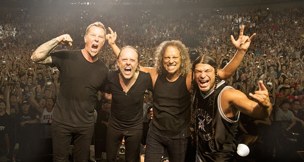
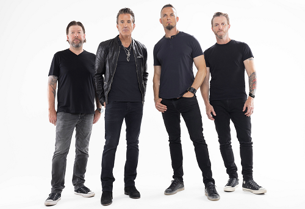

Metallica |
 |
 |
Metallica é uma banda americana de heavy metal. Foi formada em 1981 em Los Angeles pelo vocalista e guitarrista James Hetfield e pelo baterista Lars Ulrich, tendo sido baseada em São Francisco durante a maioria da sua carreira. |
Link Park |
 |
.jfif) |
Linkin Park é uma banda de rock dos Estados Unidos formada em Agoura Hills, Califórnia. A formação atual da banda inclui o vocalista e multi-instrumentista Mike Shinoda, o guitarrista Brad Delson, o baixista Dave Farrell, o DJ Joe Hahn, a vocalista Emily Armstrong e o baterista Colin Brittain. |
EvaneScense |
 |
.jfif) |
Evanescence é uma banda americana de metal alternativo formada em 1995 na cidade de Little Rock, Arkansas pela vocalista e pianista Amy Lee e o guitarrista Ben Moody. Atualmente o grupo possui cinco integrantes, sendo que Moody não está mais envolvido. |
Creed |
 |
 |
Creed é uma banda de post-grunge estadunidense formada em 1994 na cidade de Tallahassee, originalmente idealizada pelos amigos Scott Stapp e Mark Tremonti, tendo Scott Phillips e Brian Marshall. |
Slipknot |
.jfif) |
 |
Slipknot é uma banda norte-americana de metal formada em Des Moines, Iowa, em 1995. Seu estilo musical é o nu metal, que explodiu no fim dos anos 1990 nos Estados Unidos |